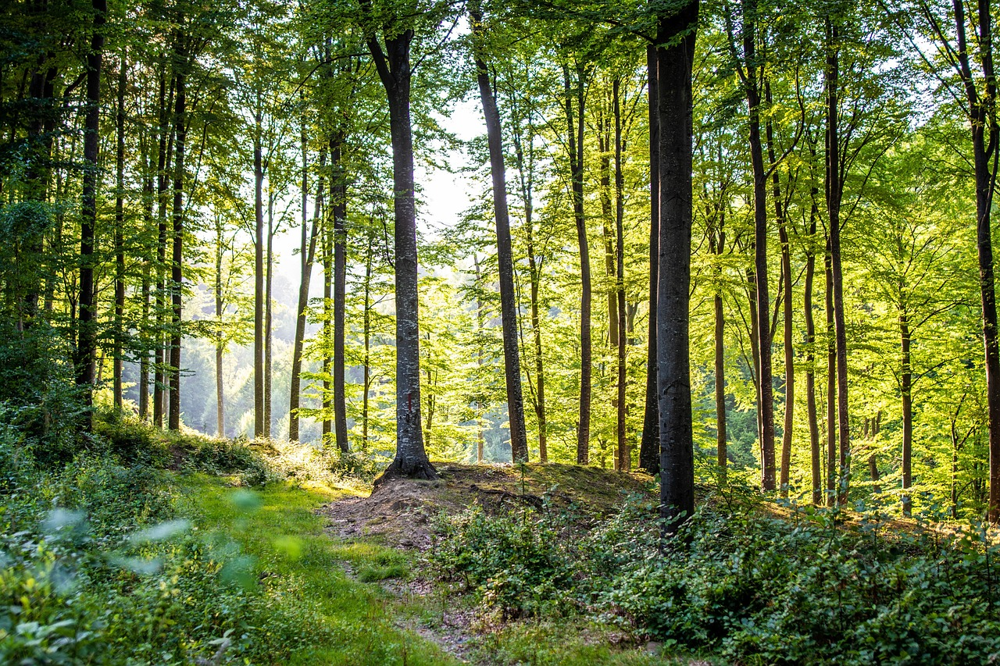

Di Antara Pohon: Pelajaran Kesabaran dari Alam
10 Sep 2025 • Zefanya
Alam seringkali menjadi guru yang tenang dan tak menggurui. Saat kita berdiri di tepi hutan atau menyusuri jalur pegunungan, ritme yang kita amati — daun tertiup angin, aliran sungai yang tak tergesa, perubahan warna musim — semuanya seakan mengingatkan satu hal sederhana: perubahan itu bertahap dan sabar.
Baca Selengkapnya
Inspirasi